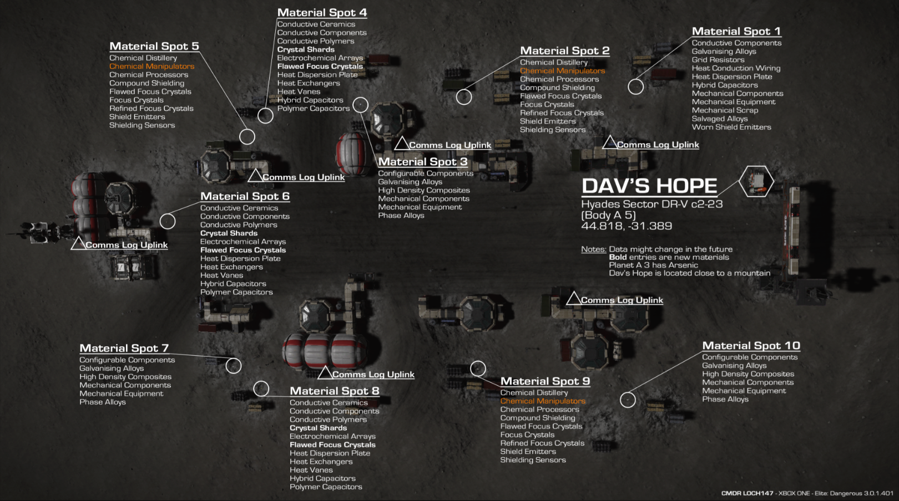

В десяти точках вокруг руин лежат бесплатные контейнеры с изготовленными материалами. Объедь руины на планетоходе, перезайди в игру, чтобы контейнеры появились снова, и повтори. Здесь быстро набираются материалы G1–G3, а материалы G4 понемногу пополняют запас. Это хорошее дополнение к сбору из высококлассных сигналов (HGE), где лучше искать G4 и G5.
Dav's Hope — заброшенное наземное поселение на планете A 5 в системе Hyades Sector DR-V c2-23. Вокруг руин десять точек сбора со свободно доступными контейнерами и один терминал для получения кодированного материала. В контейнерах лежат запасы изготовленных материалов. Собери их на планетоходе по периметру, затем перезайди в игру, чтобы обновить зону и вернуть все контейнеры.
Каждый контейнер даёт 3 единицы, а полный круг по часовой стрелке приносит примерно 30 единиц материалов со средней ступенью 2,6. Поэтому лучше всего здесь собирать материалы G1–G3 (G4 тоже попадаются, но понемногу). Высококлассные сигналы хорошо дополняют этот маршрут: в них проще пополнять G4 и G5.
В Dav's Hope быстро набираются материалы низких ступеней и запасы для обмена. В высококлассных сигналах можно быстро набрать G5. Вместе эти способы закрывают потребность в изготовленных материалах.
Нужен любой корабль, который может сесть на планету и несёт планетоход. На корабле, оснащённом для исследований (например, Asp Explorer), обычно уже есть всё необходимое:
Оружие, щиты и боевое оснащение не нужны: поселение заброшено, противников нет. Приземлись, выпусти планетоход и отправляйся по маршруту.
После первого посещения в левой панели навигации появится запись «Dav's Hope». Больше искать поселение по координатам не придётся.
Прибудь в систему, просканируй её и лети к планете A 5.
Запусти зонд подробного сканера поверхности на A 5: на экране появится навигационная метка. Затем лети к координатам 50.5322, 137.4363. В следующий раз просто выбери «Dav's Hope» в панели навигации.
Сядь рядом с руинами и выпусти планетоход.
Объедь поселение по часовой стрелке и подбирай все контейнеры с открытым грузозаборником. На маршруте 10 точек сбора и один терминал, который можно просканировать ради кодированного материала.
Закончив круг, смени игровой режим или выйди и снова зайди в тот же режим (быстрее всего в одиночном). Зона обновится, и все контейнеры появятся снова.
Делай круги, пока не наберёшь нужное, а затем лети на Vaucanson Gateway примерно в 43 св. годах отсюда, чтобы обменять материалы.

Распространённые материалы снова появляются при каждом входе. За несколько кругов можно набрать столько материалов низких ступеней, сколько иначе пришлось бы собирать часами.
Распространённые материалы быстро набираются снова, поэтому их можно обменивать целиком после каждого захода. G4 выпадают реже, но регулярно.
| Материал | Ступень | Частота выпадения |
|---|---|---|
| Изношенные излучатели щита (Worn Shield Emitters) | G1 | Высокая |
| Дефектные фокусирующие кристаллы (Flawed Focus Crystals) | G2 | Высокая |
| Гальванические сплавы (Galvanising Alloys) | G2 | Высокая |
| Фазовые сплавы (Phase Alloys) | G3 | Высокая |
| Композиты высокой плотности (High Density Composites) | G3 | Высокая |
| Химические манипуляторы (Chemical Manipulators) | G4 | Средняя |
| Настраиваемые компоненты (Configurable Components) | G4 | Средняя |
| Тепловые лопасти (Heat Vanes) | G4 | Средняя |
| Полимерные конденсаторы (Polymer Capacitors) | G4 | Средняя |
| Очищенные фокусирующие кристаллы (Refined Focus Crystals) | G4 | Средняя |
Ближайший торговец изготовленными материалами находится на станции Vaucanson Gateway (HIP 12067). Пробелы в запасах можно закрыть тремя способами:
Выгодно. Обменяй лишние G2/G3 и пополни запас двух недостающих материалов G1.
Обменивай распространённые сплавы на два материала термической категории той же ступени.
За одну единицу отдаёшь шесть G4. Если нужно несколько штук, это нормально; за большим запасом лучше лететь к высококлассным сигналам.
Выбирай маршрут по тому, какие материалы тебе нужны:
Материалы G4 тоже выпадают, но понемногу. Здесь быстрее всего пополняются низкие ступени, а излишки можно обменять на материалы термической категории.
За фармацевтические изоляторы, военные суперконденсаторы и изысканные фокусирующие кристаллы придётся отдавать по 6 единиц G4 за штуку. Если надо немного для одной сборки, можно обменять материалы из Dav's Hope. Если нужно много, начни со сбора из высококлассных сигналов. Помни, что биотехнологические проводники (Biotech Conductors) и изысканные фокусирующие кристаллы в таких сигналах не встречаются. Их получают за задания или через обмен.
Данные страницы сверены авторами с источниками ниже.
В версии 4.0 поселение перенесли. В Live используй координаты 50.5322, 137.4363; прежние 44.818, -31.389 относятся к Legacy/Horizons.